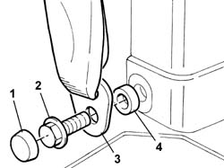
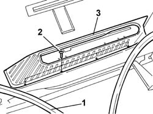

7040L44 REAR COMPARTMENT SCUFF STRIP - R R
- Path
- Procedures > 70 FITTINGS > 7040 BODY INTERIOR FITTINGS AND TRIM > 7040L CABIN FLOOR COVERING > 7040L44 REAR COMPARTMENT SCUFF STRIP - R R
- Kind
- repair procedure (removal / refitting; the operation number is the code)
- Applies to
- all engines; all production periods
- Interactive page
- https://sloeber94.github.io/elrnDB-fUlss/en/#/179007836
Applies to: all engines; all production periods
 Removing
Removing
 Refitting
RefittingOp. 7050A90 REAR SEAT (ONE) - R RE - REPAIR WITH SEAT REMOVED
Op. 7050A99 REAR SEAT SUPPORT/GUIDES - R R WITH REAR SEAT REMOVED
-
1. Remove the cover.
2. Undo the retaining bolt.
3. Release the lower seat belt fastening.

Applies to: all engines; all production periods
1. Partly release the door housing frame seal.
2. Undo the retaining bolts.
3. Remove the running board.

Applies to: all engines; all production periods
Refitting
Removing- Place the running board in position.
- Tighten the retaining bolts.
- Position the door housing seal.
- Position the spacer.
- Position the lower seat belt fastening.
- Tighten the fixing bolt.
- Position the cover.
Op. 7050A99 REAR SEAT SUPPORT/GUIDES - R R WITH REAR SEAT REMOVED
Op. 7050A90 REAR SEAT (ONE) - R RE - REPAIR WITH SEAT REMOVED
Topics linked from this page (2)
- 7050A90 REAR SEAT (ONE) - R RE - REPAIR WITH SEAT REMOVED
- 7050A99 REAR SEAT SUPPORT/GUIDES - R R WITH REAR SEAT REMOVED